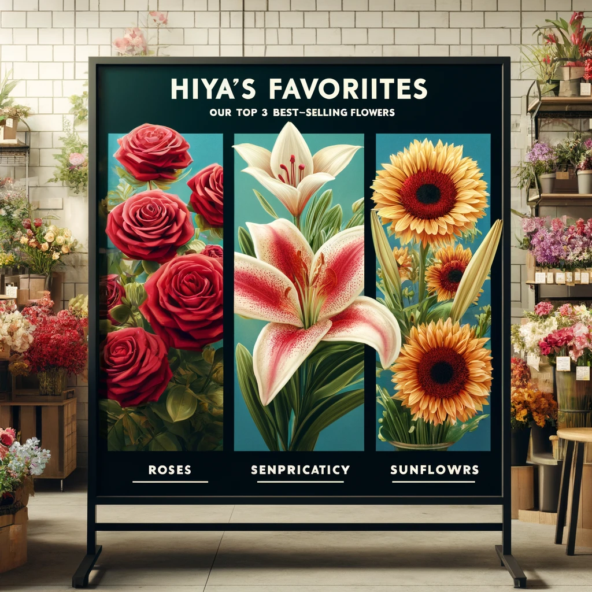
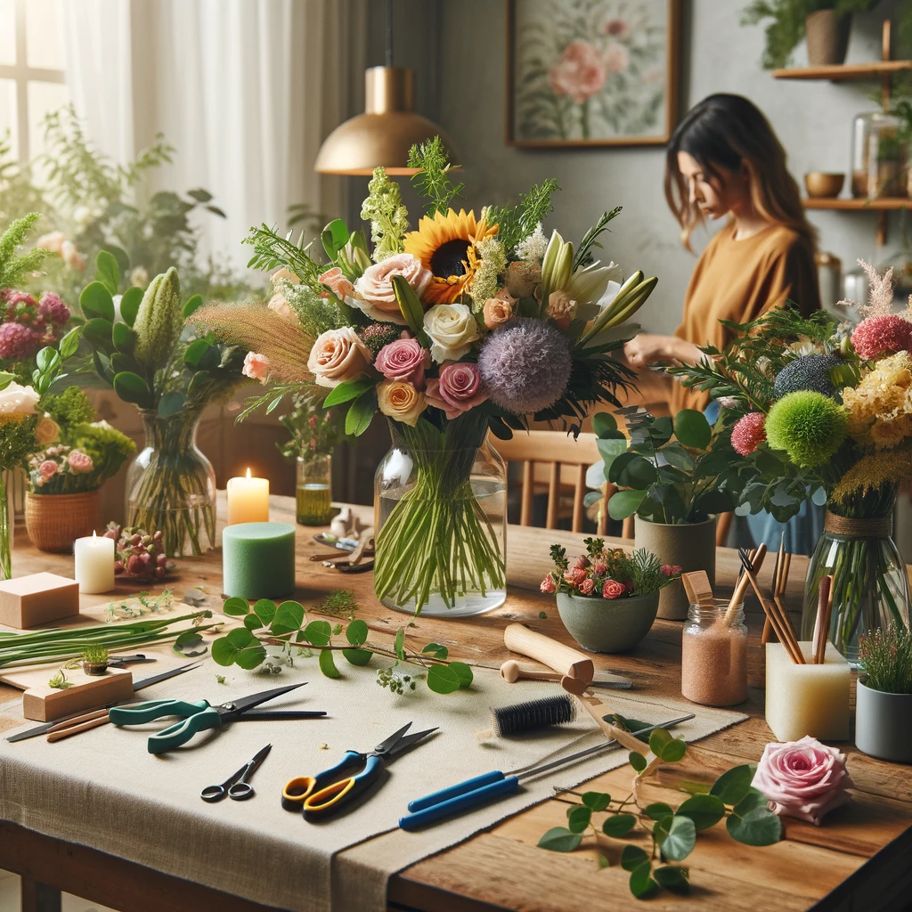

Extend the Life of Your Bouquets: Six Expert Tips
Published on April 16, 2024 | Hiyas Flowershop
Transform your space with vibrant, fresh flowers that stay beautiful longer. Follow these six expert tips to ensure your bouquets maintain their splendor and vitality, keeping your home cheerful and fragrant for an extended period. Discover how to make every floral arrangement last and enhance your living environment.
Transform your space with vibrant, fresh flowers that stay beautiful longer. Follow these six expert tips to ensure your bouquets maintain their splendor and vitality, keeping your home cheerful and fragrant for an extended period. Discover how to make every floral arrangement last and enhance your living environment.
Seven Steps to Selecting the Perfect Wedding Bouquet
Published on April 16, 2024 | Hiyas Flowershop
Capture the essence of your wedding day with the perfect bouquet that reflects your personal style and the romance of the occasion. Our guide, 'Seven Steps to Selecting the Perfect Wedding Bouquet,' offers expert tips to help you choose a floral arrangement that complements your theme and enhances your special day
Capture the essence of your wedding day with the perfect bouquet that reflects your personal style and the romance of the occasion. Our guide, 'Seven Steps to Selecting the Perfect Wedding Bouquet,' offers expert tips to help you choose a floral arrangement that complements your theme and enhances your special day
5 Steps to Crafting Stunning and Memorable Floral Designs
Published on April 16, 2024 | Hiyas Flowershop
Unlock the secrets to transforming your everyday houseplants into breathtaking home masterpieces with our simple, step-by-step guide. Whether you're a seasoned gardener or a budding green thumb, this guide will walk you through the process of selecting the perfect blooms and foliage to complement your living space.
Unlock the secrets to transforming your everyday houseplants into breathtaking home masterpieces with our simple, step-by-step guide. Whether you're a seasoned gardener or a budding green thumb, this guide will walk you through the process of selecting the perfect blooms and foliage to complement your living space.
DIY Floral Arrangements: Simple Steps for Stunning Displays
Published on April 16, 2024 | Hiyas Flowershop
Discover 5 easy steps for stunning DIY floral displays. We guide you from choosing blooms to creating eye-catching arrangements that reflect your style, effortlessly. It's time to transform your houseplants into home masterpieces! Follow our simple tips and turn your living space into a vibrant, floral haven
Discover 5 easy steps for stunning DIY floral displays. We guide you from choosing blooms to creating eye-catching arrangements that reflect your style, effortlessly. It's time to transform your houseplants into home masterpieces! Follow our simple tips and turn your living space into a vibrant, floral haven
How to Choose the Perfect Flowers for Any Occasion
Published on April 18, 2024 | Hiyas Flowershop
Symbolic meanings of various flowers and how to use them to convey your emotions effectively, whether for joyous celebrations, solemn moments,or romantic gestures. Discover tips on color coordination, seasonal availability, and how to match flowers to the personality and preferences of the recipient.Get Educated read down below
Symbolic meanings of various flowers and how to use them to convey your emotions effectively, whether for joyous celebrations, solemn moments,or romantic gestures. Discover tips on color coordination, seasonal availability, and how to match flowers to the personality and preferences of the recipient.Get Educated read down below
The Language of Flowers: What Your Bouquet Can Really Say
Published on April 18, 2024 | Hiyas Flowershop
Flowers have their own secret language, with each bloom expressing a specific sentiment or emotion. This engaging blog post delves into the fascinating world of floriography, the art of communicating through the choice of flowers. Discover the historical origins of this practice and learn how different cultures use flowers to messages without words.
Flowers have their own secret language, with each bloom expressing a specific sentiment or emotion. This engaging blog post delves into the fascinating world of floriography, the art of communicating through the choice of flowers. Discover the historical origins of this practice and learn how different cultures use flowers to messages without words.
Color Therapy: Choosing Hiyas Flowers to Set the Mood
Published on April 18, 2024 | Hiyas Flowershop
Different colors to have the ability to significantly influence mood and atmosphere, making the choice of quality of a flower colors an important consideration when we trying to evoke specific feelings or set a particular ambiance.Now Here's how various colors can impact mood and some tips on selecting the right flower colors for emotional impact:
Different colors to have the ability to significantly influence mood and atmosphere, making the choice of quality of a flower colors an important consideration when we trying to evoke specific feelings or set a particular ambiance.Now Here's how various colors can impact mood and some tips on selecting the right flower colors for emotional impact:

Meet the Hiyas Favorites: Our Top 3 Best-Selling Flowers
Published on April 18, 2024 | Hiyas Flowershop
At Hiyas, the flowers that capture our customers' hearts the most include lush peonies, vibrant tulips, and the ever-elegant roses. These blooms are favored for their striking beauty, range of colors, and the unique emotions they evoke. Peonies, with their full, lush petals, are often sought after for romantic and luxurious floral arrangements.
At Hiyas, the flowers that capture our customers' hearts the most include lush peonies, vibrant tulips, and the ever-elegant roses. These blooms are favored for their striking beauty, range of colors, and the unique emotions they evoke. Peonies, with their full, lush petals, are often sought after for romantic and luxurious floral arrangements.
